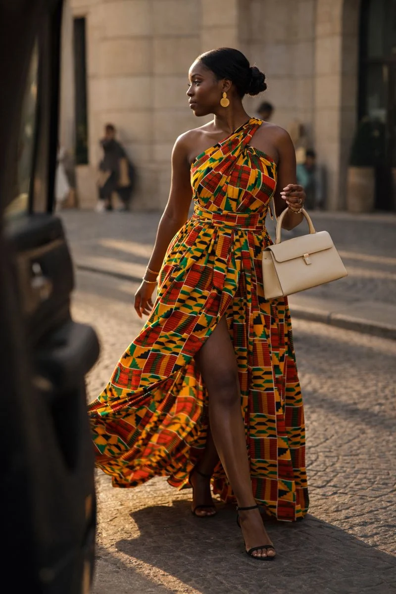
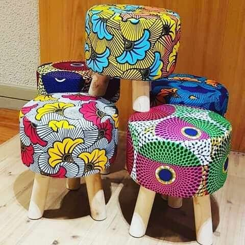
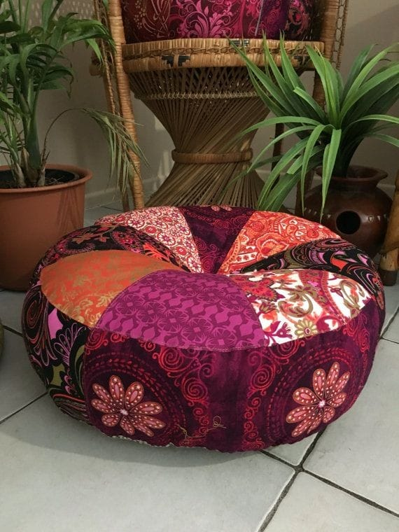
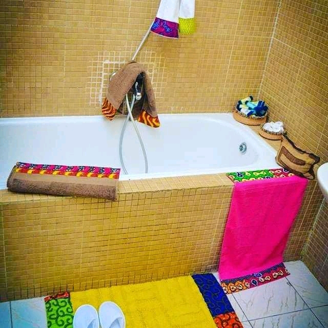
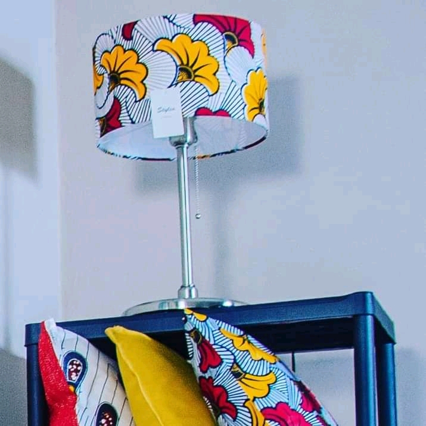
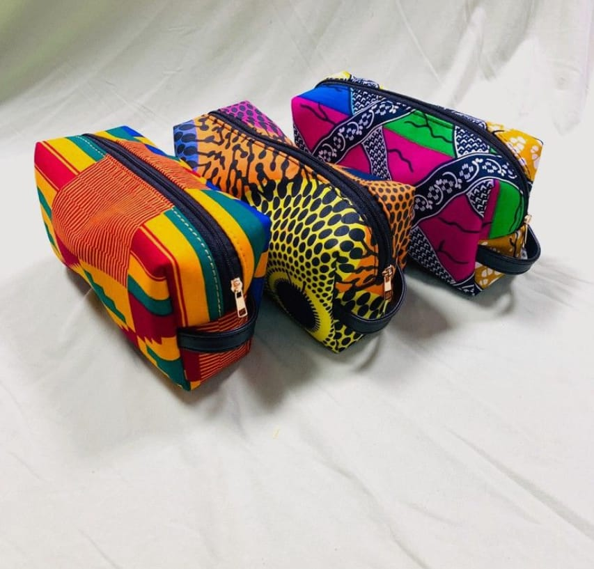
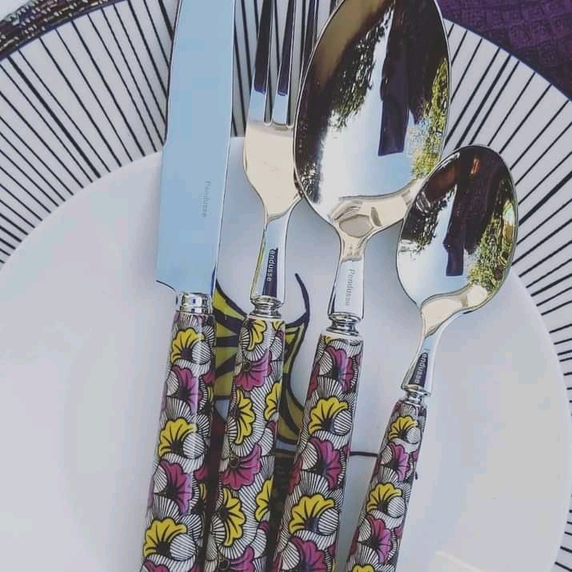
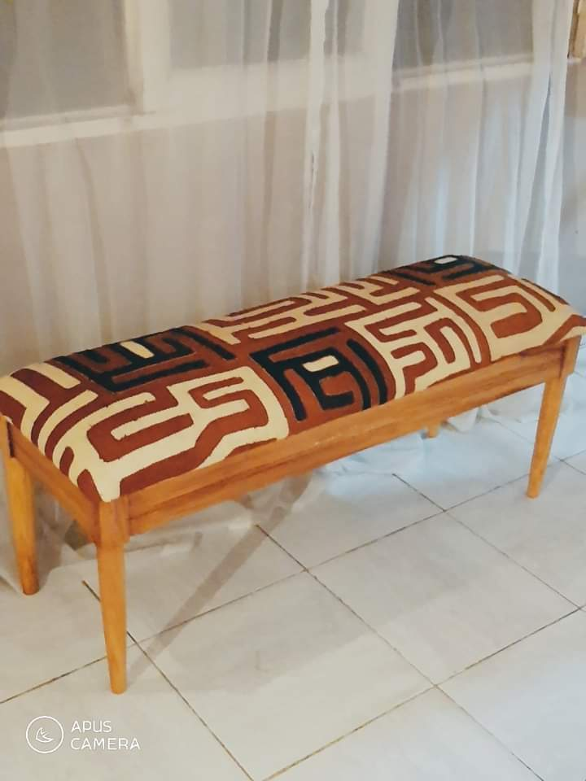
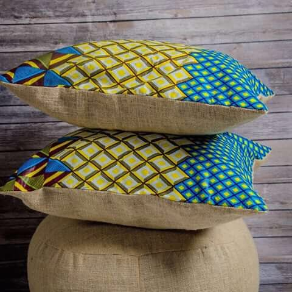
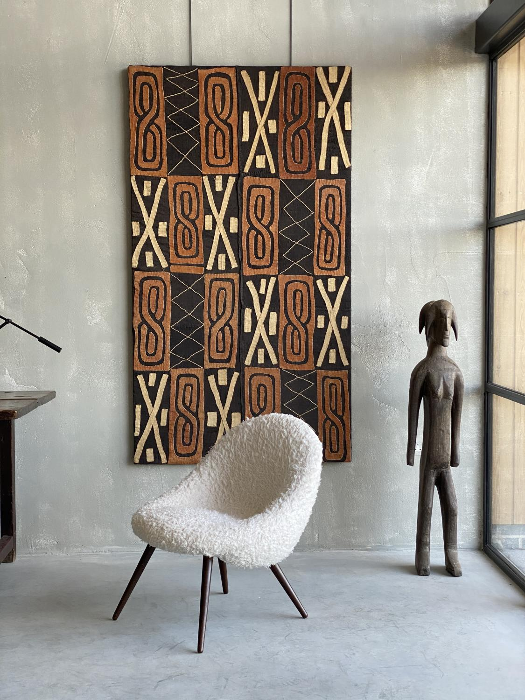

Des pièces qui vous ressemblent
Tenues, détails et accessoires de style en pagne.
L’atelier des idées en pagne
Un vêtement, un fauteuil, une lampe ou même vos cuillères : racontez-nous votre idée, nous lui donnons vie en tissu africain.
Votre envie, notre savoir-faire.
Chaque pièce commence par une conversation.

Nos créations
Du quotidien aux grandes occasions, le pagne trouve sa place partout. Choisissez une famille de créations, puis imaginons la vôtre.
Tenues, détails et accessoires de style en pagne.

Tabourets, chaises et fauteuils habillés de vos motifs.

Une touche de couleur pour habiller vos espaces.

Des motifs de pagne jusque dans vos petits rituels.

Abat-jours, coussins et accents déco en tissu.

Trousse, sac, chaussons et objets du quotidien.

Des couverts habillés de pagne pour une table unique.

Des assises graphiques, inspirées de nos racines.

Un jeu de tissus et de motifs pour votre intérieur.
Vous ne voyez pas encore votre idée ? Elle a aussi sa place ici.
Parlons-en
Nos racines, notre élan
Au Congo, le tissu raconte une histoire : celle d’une famille, d’un village, d’une fête. Orianah Style porte cet héritage dans la mode, la maison et les objets d’aujourd’hui.
Les formes graphiques du Kuba du Kasaï nous inspirent autant que l’énergie du pagne wax. Nous mêlons ces influences au savoir-faire de l’atelier pour créer des pièces vivantes, pensées avec vous.
Créer avec nousSimple comme bonjour
Pas besoin d’avoir tout décidé. On avance ensemble, un échange à la fois.
Une idée, une photo, une envie de couleurs : tout est un bon début.
On échange sur la création, les tissus et les détails qui feront la différence.
Votre idée prend forme en une création pensée spécialement pour vous.
Et si on commençait ?
Remplissez quelques détails et retrouvez-nous sur WhatsApp pour imaginer la suite ensemble.